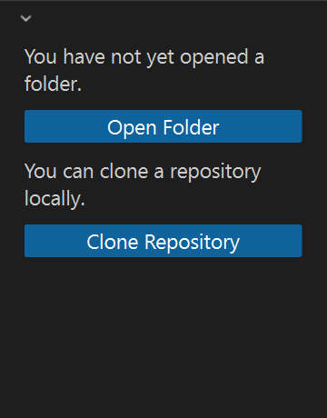
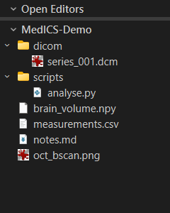
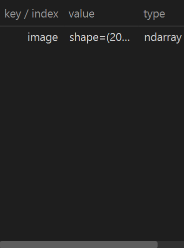
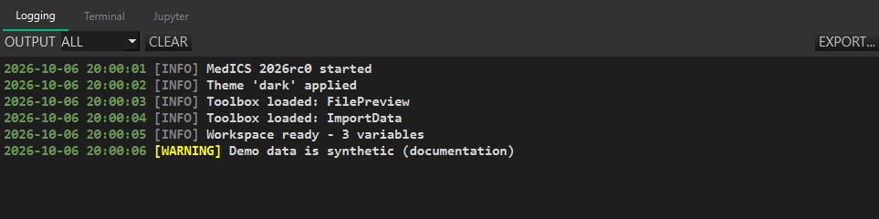
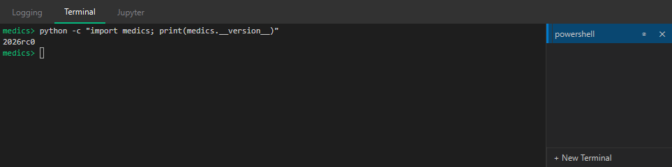
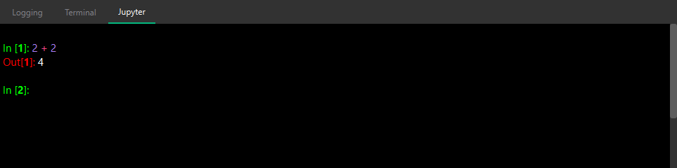
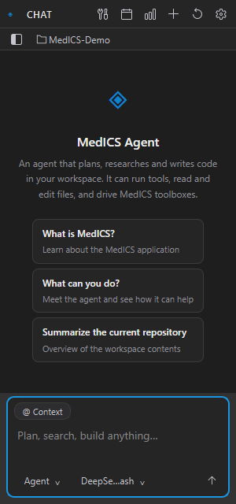

The MedICS window
MedICS opens as a single window. Your tools open as tabs in the middle, and the panels around them give you the file tree, your variables, the log, a terminal and the Python console. Panels can be shown or hidden, resized and re-arranged.
Show or hide panels from the View menu, or double-click a tab title to collapse the surrounding panels and focus on your work.
File Explorer
Browse the folder you are working in. Double-click a file to preview it in a tab, drag files or folders into the window to import them, and right-click for Open, Preview, Copy path and Reveal in Explorer. Use the folder button to switch folders.


Variables
Every value you create in Python — arrays, images, tables and other objects — is kept in the workspace and listed here with its name, type and size. Double-click a variable to inspect or preview it.

Logging
The in-app output panel shows messages from every part of MedICS. Filter by level (ALL / DEBUG / INFO / WARNING / ERROR / CRITICAL), clear the view, or export the entries to a text file.

Terminal
A real shell embedded in the window. It runs in its own process, separate from the application, so it is the place for command-line tools and scripts. + New Terminal lets you open additional shells (PowerShell, Command Prompt, Git Bash, …); the list on the right switches, renames, clears or closes them.

Jupyter console
An interactive Python console that runs inside MedICS, so it shares your workspace. Use it for quick calculations, to inspect data, and to script an analysis without leaving the application. See Python console & workspace.

Agent chat
The AI assistant. Ask questions about your data, or ask it to carry out a task and it will use the tools it needs. Actions that create or change data ask for your approval first. See AI assistant.
